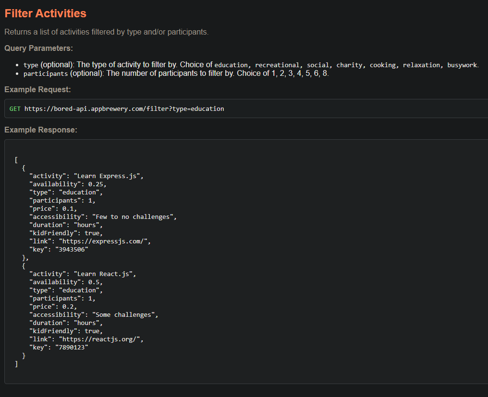
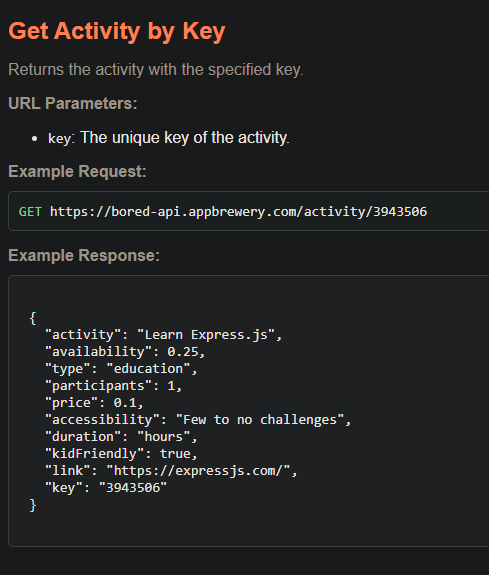

API
INTRODUCTION TO API
Application Programming Interface (API)
When theres 2 Programs with different language
API acts as the bridge so they know how to interact to each other.
Example:
You want a note website that auto captures what weather it is that day.
and there is an open sourced WeatherProgram that stores weather data.
the WeatherProgram will create an API that tells you how to interact with their services.
Now what you need is to make request from your website through API,
and using the API you can now know how to interaact with their services
to get what you requested for and apply to your website.
. (GET REQUEST)
Your website ------------> API -----------------> WeatherProgram
Your website <------------ API <----------------- WeatherProgram
. (RESPONSE/DATA)
So basically API is a set of rules that you can follow.
Types of API:
GraphQL
{REST:API}
{SOAP}
gRPC
etc.
These are architectural styles. And these have different set or rules on how to interact with the website.
RESTful API is the most popular and most used API in the web development.
You use HTTP Protocol to interact with the API.
so its using GET, POST, PUT, PATCH, DELETE.
API FORMATTING STRUCTURE
Endpoints, Path Parameters, and Query Parameters.
Frontend -----(GET REQUEST)-----> Your server
This is same thing as API, called "Private API"
So this is basically the structure
---------------------------(GET REQUEST)------------->>>
<<<------------------------(RESPONSE)----------------------------
Private API: Something you dont want documented or not something that can be shared.
Public API: Something that is open for the public use.
API ENDPOINTS
baseurl/Endpoint
the endpoint is the route on the API Provider Server.
Query Parameter
baseURL/endpoint + ?query=value
You start all query with a question mark then value of it.
Normally you hit API for filtering, searching, sorting.
you can also do multiple query via &
baseURL/endpoint?query=value&query2=value
so for this Practice API documentation:
https://bored-api.appbrewery.com/

In the API response you can see the type and their value.
and on top you can see the query parameters you can use to control what you wanna do.
so for example:
GET https://bored-api.appbrewery.com/filter?type=education&participants=1;
on the image above the one who will show up is those who have education type and 1 participants.
Path Parameter
baseURL/endpoint/ {path-parameter}
endpoint is a fixed path and cannot change.
but path-parameter is the path that does change.
it could be an id, or username.
so its something very specific that can help identify any resource on the API.
So to differentiate,
Query Parameter is for filtering and searching while Path Parameter is for identifying a resource by some specific parameter.
Example:

GET https://bored-api.appbrewery.com/activity/5914292
Since i each key is unique then i want to access the activity with the key of 5914292.
INTRODUCTION TO JSON
JSON - Javascript Object Notation
Its a way to format data that can be sent over the internet in a readable and efficient way.
Its structure very similar to JS Object.
Javascript Object
const servant = {
name: "Lau",
age: 18,
city: "Pasay",
education: [
{
degree: "Criminology",
university: "Philippine National Police Academy",
},
{
degree: "BS Aeronautics",
university: "Philippine National Aeronautics State University",
},
],
};This is an object, Its a structured template for repeating data. And in here you can nest an object inside another object.
JSON
{
"name": "Jade Japos",
"age": 18,
"city": "Valenzuela",
"education": [
{
"degree": "B.S. Information Technology",
"school": "Pamantasang Lungsod ng Valenzuela"
},
{
"degree": "B.S. Computer Science",
"school": "University of the Philippines"
},
]
}This is the way to structure a JSON.
Difference:
The changes is that the Javascript keys (example: name) has turned into a string.
Every keys is a string and the value can be string, numbers, or array.
When you encounter JSON its because some data are being transferred across internet.
Javascript Object has a more relax notation because it can be interpreted by the editor or by the code interpreter themselves.
Reason why JSON is used:
Its because it makes it easier to transfer data by compressing it.
This is JS Object and this is JSON
const wardrobe = {
doors: 2,
drawers: 2,
color: "red",
};
{"doors":2,"drawers": 2,"color":"red",}
then when JSON is transferred to internet, it is expanded again in usable format like JS Object if it is needed.
Sometimes JSON is hard to read because it is sent in its flat pack notation, so use JSON Visualizer online.
jsonviewer.stack.hu
JS Object ---> JSON
This is called Serialization
Turning an object into a JSON.
in order to turn them using code you would need the JSON module
const jsonData = JSON.stringify(data);
You paste the Javascript object on the data
JSON ---> JS Object
This is how you reverse the process of turning JSON back to JS Objectconst data = JSON.parse(jsonData);
You paste the JSON on jsonData.
then you can now use the JSON on the ejs by calling it <% array.category.division.name %>